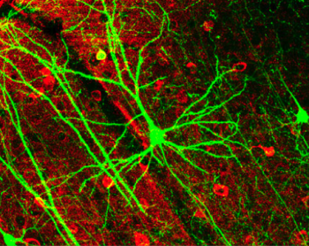

1.2: The Field of Biological Psychology
What is Biological Psychology? Biological psychology is the scientific study that links brain and behavior. Biological psychology, or biopsychology or biopsych for short, is related to neighboring disciplines including psycho-biology and behavioral neuroscience (Pinel & Barnes, 2017). The distinction is subtle, but we use the term biological psychology here because it emphasizes the centrality of psychology (i.e., the science of mental processes and behavior). Our goal is to understand the biological bases of psychology, rather than psychological aspects of biology or neuroscience. Thus, biological psychology investigates how biological factors like the brain, nervous system, hormones, and genes influence our cognition, emotions, motivations, memories, and actions. Biological psychology is not only a scientific discipline, but also a viewpoint that emphasizes that brain mechanisms underlie all of our thoughts and actions and that these brain mechanisms have evolved over eons from our ancient ancestors who survived and reproduced (Kalat, 2019).
The History of Biological Psychology. Thinkers have long mused about the nature of human behavior and experience, but the scientific discipline of biological psychology has roots in physiology, philosophy, and the early psychologists who adopted empiricism in the 19th century (Garrett, 2015). Wilhem Wundt, considered the founder of experimental psychology, started the first psychology laboratory in the 1870s in Leipzig, Germany, where his research emphasized systematic observation to understand consciousness and mental processes. In The Principles of Psychology (1890), William James argued that the scientific study of psychology should be grounded in an understanding of biology (Walinga, 2019). Although we can’t pin down the exact start of the field of biological psychology, the publication of Donald Hebb’s groundbreaking book The Organization of Behavior in 1949 marked a defining moment. Hebb proposed the first brain-based account of how psychological phenomena like perception, thought, and memory could emerge from brain activity, and thereby challenged the prevailing view that psychological phenomena were too complex to originate from brain processes (Pinel & Barnes, 2017).
Divisions of Biological Psychology. Nowadays, biological psychology is a broad and diverse field that consists of many different approaches to studying links between the brain and behavior. Here are some major branches of biological psychology:
- Psychopharmacology examines how drugs and other substances affect the brain and behavior, as well as how they can be used to treat psychological disorders.
- Neuropsychology investigates the relationship between brain function and behavior, focusing on how brain damage or dysfunction can impact cognitive and psychological functioning especially in human patients.
- Psychophysiology studies of the relation between physical functions of organisms (physiology) and psychological processes. Common physiological measures include electroencephalogram (EEG), heart rate, and pupil dilation.
- Psychoneuroimmunology examines the relationships between the nervous system, immune system and hormones, and behavior. Psychoneuroimmunologists often study the impact of stress and stress hormones on illness susceptibility and recovery.
- Evolutionary psychology explores how evolutionary processes, like natural selection, have adaptively shaped human traits and behaviors.
- Behavioral genetics analyzes how genetic factors contribute to individual differences in behavior, cognition, personality, etc. and how genetic factors interact with environmental influences.
- Cognitive neuroscience studies the neural basis of human cognitive processes, including perception, attention, memory, language, and decision-making. It often uses tools like functional brain imaging.
- Comparative psychology examines the behavior and mental processes of nonhuman animals to gain insights into the evolutionary and environmental factors that shape animal and human behavior and mental processes.
Biological psychology can be parsed into even more subfields, the subfields overlap, and researchers often work in more than one area. But this list shows the breadth of approaches used to study links between the brain and behavior.
Biological psychology is highly interdisciplinary and researchers may have trained in psychology, neuroscience, biology, computer science, medicine, philosophy, or engineering. Each discipline contributes a different approach to understanding the brain and its functions, but also poses new questions and problems that require collaboration and integration. Understanding and integrating knowledge from various subfields can be challenging for both students and researchers, but that integration provides a richer understanding of the brain and leads to breakthroughs that propel scientific progress.

Media Attributions
- Pyramidal neurons © Wikipedia is licensed under a CC BY (Attribution) license


A method for acquiring knowledge is one based on observation, including experimentation, rather than a method based only on forms of logical argument or previous authorities.